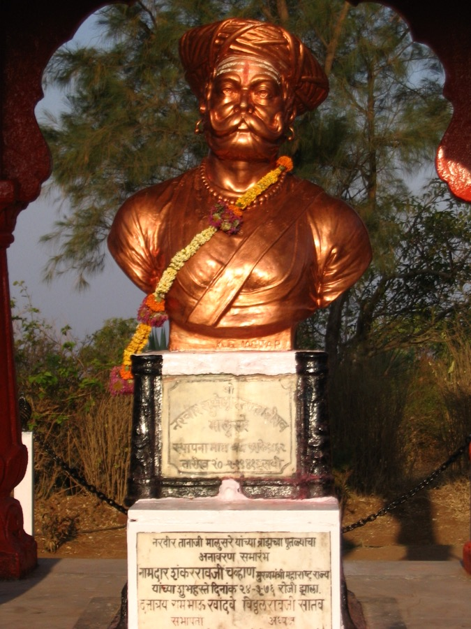
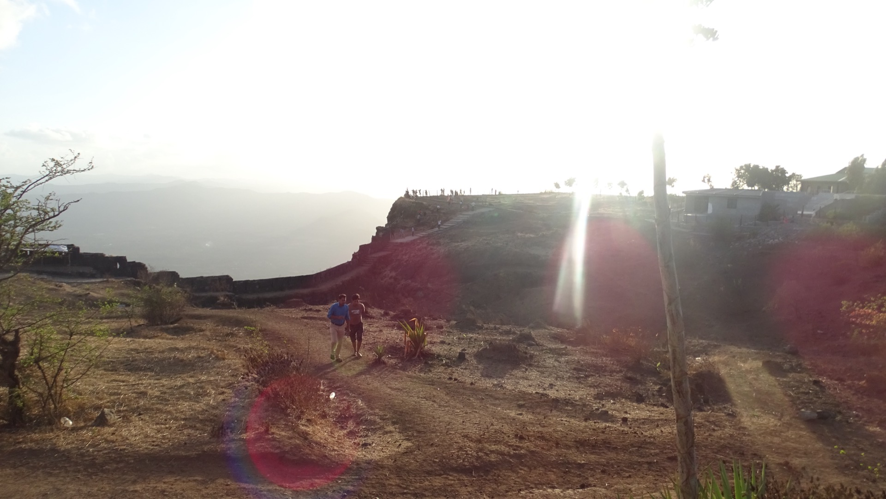
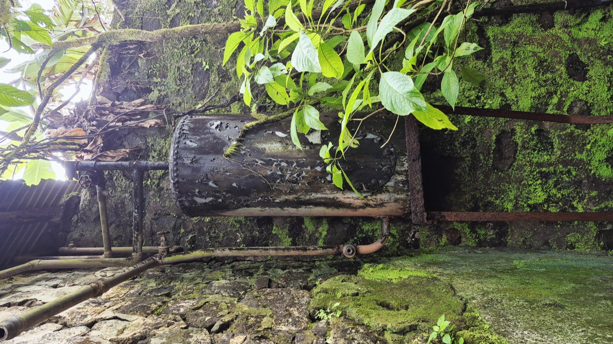
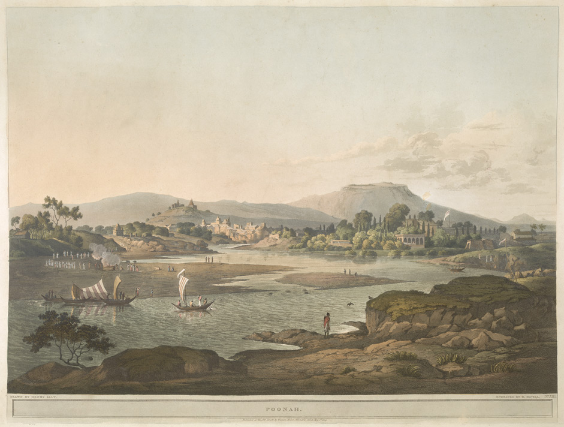
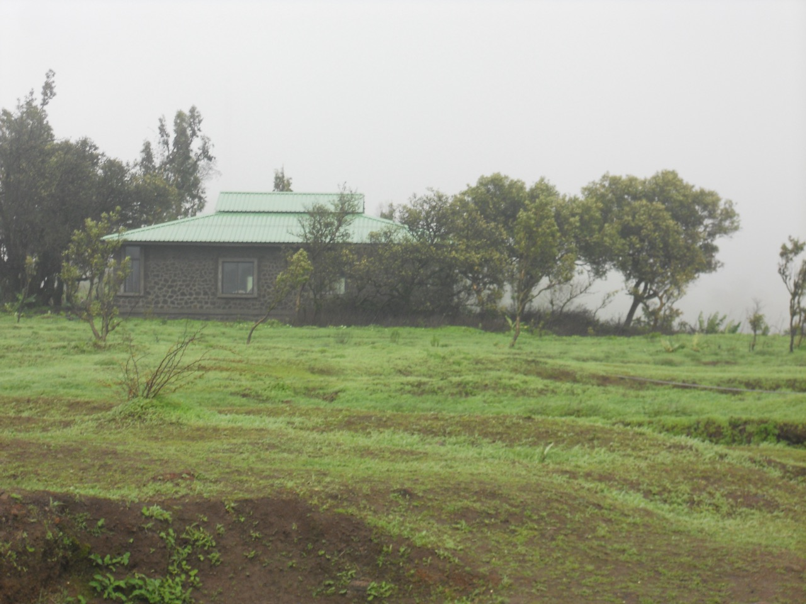

Battle of Sinhagad Explorer
On a moonless night in 1670, Tanaji Malusare and a band of Mavali soldiers scaled the sheer cliffs of Kondhana to wrench the fortress from its Mughal garrison. The fort was won — but the lion who won it never came home.
A Fort That Commanded the Deccan
Kondhana — the hill fortress later renamed Sinhagad — rises from the Bhuleshwar range of the Sahyadri mountains, about 28 kilometres southwest of Pune, at over 1,300 metres above sea level. From its ramparts a garrison could watch the roads to Pune, Chakan and the surrounding Maval country, making it one of the most strategically important strongholds in the western Deccan.
For Chhatrapati Shivaji Maharaj, the fort was a linchpin of the Swarajya he had built. The Treaty of Purandar (1665) with Mirza Raja Jai Singh I had forced him to surrender 23 forts to the Mughals — Kondhana among them. Now, in 1670, with the Maratha state rebuilt after his escape from Agra, Shivaji launched a campaign to win his forts back. Kondhana would be one of the first to return.
🏔️ At a Glance
- Night of 4 February 1670 — Fought at the fort of Kondhana (Sinhagad), near Pune, Maharashtra.
- Maratha Victory — The fortress was wrested from its Mughal garrison.
- Legendary Raid — The fort was taken by scaling a sheer cliff at night.
- Commanders Lost — Tanaji Malusare and Udaybhan Singh Rathore both fell in the fighting.
- Renamed Sinhagad — "The Lion's Fort", in honour of the fallen Tanaji.
The Road Back to Kondhana
Five years of Mughal occupation, an imperial summons to Agra, a daring escape — and a vow to reclaim what had been lost.
The Treaty of Purandar
In June 1665, besieged at Purandar and facing the armies of Mirza Raja Jai Singh I, Shivaji agreed to surrender 23 of his 35 forts to the Mughals. Kondhana, guarding the routes to Pune, was among the most valuable handed over.
A Mughal Fort, A Rajput Keeper
The Mughals manned Kondhana with some of Jai Singh's bravest Rajput soldiery. Its keeper was Udaybhan Singh Rathore, a veteran Rajput sardar whose loyalty to the imperial cause could not be shaken.
Agra and the Great Escape
In 1666 Shivaji was summoned to the imperial court at Agra, where he was placed under house arrest. His dramatic escape in a gift-basket of sweets rekindled Maratha resolve and prepared the ground for a reconquest.
The Reconquest of 1670
By early 1670 the Maratha state had recovered. Shivaji's plan was to retake his lost forts one by one, beginning with the strongholds that threatened Pune. Kondhana was first on the list — and Tanaji Malusare would lead the way.
The Belligerents
On one side the Mavali warriors of the Swarajya; on the other, the Mughal garrison of the Deccan. A night's raid, decided by courage and blade-work on a single clifftop.
Maratha Kingdom
- Sovereign — Chhatrapati Shivaji Maharaj (at Rajgad, directing the campaign)
- Assault Commander — Tanaji Malusare, trusted general and lifelong companion of Shivaji
- Key Leaders — Suryaji Malusare (Tanaji's brother), Shelar Mama
- Strength — Around 300 men made the initial night escalade; a larger force waited below the gates
- Troops — Mavali light infantry, skilled in the hill warfare of the western ghats
Mughal Empire
- Sovereign — Emperor Aurangzeb Alamgir
- Fort Keeper — Udaybhan Singh Rathore, a Rajput sardar in Mughal service
- Garrison — Rajput and Mughal troops posted to hold Kondhana after 1665
- Strength — A sizeable garrison that outnumbered the raiding party (figures vary by source)
- Troops — Veteran Rajput soldiery, among the bravest Jai Singh could spare
Why it mattered: Kondhana was not merely a fort — it was the hinge on which control of the western Deccan turned. Whichever side held its heights commanded the roads into Pune and the Maval heartland. Recapturing it would shatter the Mughal grip on the region and announce, in a single night, that the Maratha state had returned.
Chronology of the Battle of Sinhagad
From the loss of the fort to the bonfire that told Shivaji it was won again.
Kondhana and Its Defenders
The ancient hill fortress — known as Kondhana, after the sage Kaundinya — guards the passes of the Bhuleshwar range, a sentinel over Pune for centuries before the Marathas ever raised their flag upon it.
Treaty of Purandar
Under siege and pressed by Jai Singh I, Shivaji cedes 23 forts to the Mughals. Kondhana passes into imperial hands and a trusted Rajput keeper, Udaybhan Singh Rathore, takes charge of its garrison.
Agra and the Escape
Shivaji is detained at the Mughal court at Agra. His escape from house arrest in the summer of 1666 revives the cause of Swarajya and sets the stage for recovering the lost forts.
Tanaji Takes the Field
Shivaji resolves to retake Sinhagad. He summons Tanaji Malusare — who is in the midst of his son's wedding festivities — to lead the raid. Tanaji departs at once with his Mavalis, choosing the expedition over the celebration.
The Night Escalade
Under a dark, moonless sky, roughly 300 Mavalis scale the sheer western cliff — a route the garrison thought impassable — using rope ladders and the grip of a monitor lizard, the ghorpad Yashwanti. Suryaji's men wait concealed below the main gate.
The Duel of the Commanders
Alarmed sentries raise the garrison and fierce hand-to-hand fighting breaks out across the fort. Tanaji and Udaybhan meet in single combat; both leaders fall mortally wounded. Tanaji's shield shattered, he fights on wrapped in cloth before he is struck down.
The Fort Is Won
Seeing his brother fallen and the attack falter, Suryaji Malusare cuts away the scaling ladders and rallies the Mavalis with a call to avenge Tanaji. The renewed charge sweeps the garrison aside, and by dawn Kondhana flies the Maratha colours.
"Gad Ala, Pan Sinha Gela"
A bonfire lit on the ramparts signals victory to Shivaji at Rajgad. But when he learns that Tanaji has been lost, his grief is total: "Gad ālā, pan sinhā gelā" — "The fort is won, but the lion is gone."
A Victory Paid in a Hero's Life
The Battle of Sinhagad ended in a decisive Maratha victory. By daybreak the fortress was back in Maratha hands, and the western Deccan's most important stronghold no longer threatened Pune. But the price was the life of its conqueror.
- Fort recovered — Kondhana returned to Maratha control as part of the 1670 reconquest campaign.
- Garrison overcome — The Mughal-Rajput garrison was routed; Udaybhan Singh Rathore fell in the fight.
- Tanaji Malusare killed — The assault commander died in single combat, moments before victory was secured.
- Command passed — Suryaji Malusare completed the capture and was placed in command of the fort.
- Pune secured — With Kondhana regained, the roads to Pune and Chakan were safe once more.
Kondhana Becomes Sinhagad
Shivaji is said to have ridden out and climbed the fort to stand at his friend's fallen side. "The fort is won, but the lion is gone," he lamented — and in that moment, the fort of Kondhana received the name by which India remembers it: Sinhagad, the Lion's Fort, in honour of the warrior the Marathas called Sinha.
The victory rippled outward. Within weeks the pattern of the night escalade was repeated at Purandar, and fort after fort slipped from Mughal hands as Shivaji's reconquest swept across the Deccan. The fall of one commander had galvanised a kingdom.
Why Sinhagad Still Resonates
The battle of a single night outgrew its moment. It became the defining emblem of Maratha valour, sacrifice, and devotion to Swarajya.
The Lion's Fort
Renaming Kondhana as Sinhagad turned a geographical landmark into a living memorial — a fort that carries its hero's name in every telling of its history.
The Powada of Tanaji
Shivaji commissioned the poet Tulsidas to compose a powada — a martial ballad — celebrating Tanaji's courage. Sung across Maharashtra for over 350 years, it remains among the most beloved of Marathi heroic verse.
A Symbol of Swarajya
The recapture announced that the Maratha state had survived the Treaty of Purandar. Sinhagad became proof that no fort given away could not be taken back.
Memorials on the Fort
Sinhagad still holds the samadhi and memorial bust of Tanaji Malusare, alongside the memorial of Rajaram I. A restored 350-year-old commemorative structure was unearthed in 2019.
A Modern Retelling
The 2020 Hindi film Tanhaji brought the battle to a new generation, introducing Tanaji Malusare and the ghorpad Yashwanti to audiences across India and the world.
A Living Heritage Site
Today Sinhagad is one of Maharashtra's most visited forts — a heritage trek where families climb the very cliff Tanaji scaled, walking the ground of India's most celebrated night battle.
🦁 What Sinhagad Teaches
- Courage over numbers — A small, resolute force surprised a larger garrison through audacity and surprise.
- Leadership in sacrifice — Tanaji's death did not end the mission; it steeled his men to finish it.
- Memory as power — A name, a ballad, and a samadhi kept the spirit of a battle alive for centuries.
The Fort and Its Heroes Remembered
Imagery evoking the Sahyadri fortress, the Maratha banner, and the commanders who made Sinhagad legendary.






📚 References & Further Reading
- Grant Duff, James (1826). A History of the Mahrattas, Vol. I. Longman, Rees, Orme, Brown & Green. (The classic British account of the battle and its commanders.)
- Sarkar, Jadunath (1919). Shivaji and His Times. Longmans, Green & Co.
- Gordon, Stewart (1993). The Marathas 1600–1818. Cambridge University Press. (Records the capture of Sinhagad as the first and most spectacular success of the 1670 reconquest.)
- Tulsidas (17th century). Tanaji Malusare Powada — the martial ballad commissioned by Shivaji and still sung in Maharashtra.
- Gazetteer of the Bombay Presidency, Poona District. Government of India. (Fort, monument and district records for Sinhagad.)
- Department of Tourism, Government of Maharashtra. Sinhagad — official heritage and tourism notes on the fort.
- Encyclopaedia Britannica. Battle of Sinhagad and Tanaji Malusare.
- Wikimedia Commons, Category: Sinhagad — photographs of the fort, the Tanaji Malusare bust, and Henry Salt's period watercolour of Pune with Sinhagad in the background (freely licensed media used on this page).